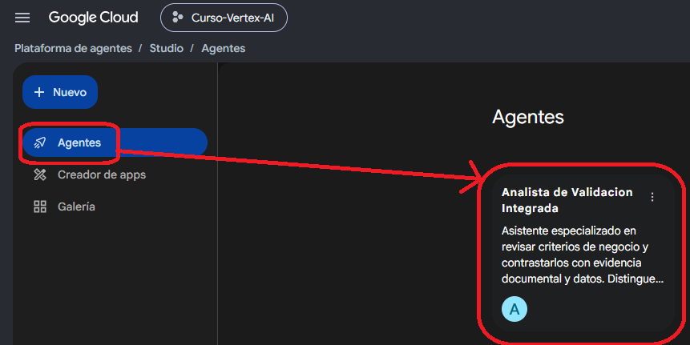

06. Ejecutar el Analista de Validación Integrada
Ahora el agente leerá el criterio preparado en Storage, comprobará las tablas de BigQuery, ejecutará una única consulta analítica y guardará tres entregables trazables en tu espacio.
Antes de ejecutar
No abras una conversación antigua con contexto de pruebas previas. Usa una conversación nueva en Preview para que la ejecución sea fácil de seguir.
Qué hará el agente
Abrir el agente
- Abre Agent Studio.
- Localiza el agente Analista de Validación Integrada.
- Ábrelo sin modificar sus Instructions, Knowledge ni Tools.
- Entra a Preview.
- Inicia una conversación nueva.

Prompt principal de ejecución
Reemplaza alumno-XX por tu carpeta y pega el bloque completo en una conversación nueva.
Realiza una validación integrada utilizando exclusivamente las fuentes y herramientas disponibles en este agente. Fuente documental del caso: gs://banco-curso-vertex-datos/alumnos/prueba-tipo/alumnos/alumno-XX/insumos/criterio_revision.txt Fuentes de datos en BigQuery: - `arched-osprey-506820-i9.analitica_bancaria_demo.movimientos_diarios` - `arched-osprey-506820-i9.analitica_bancaria_demo.cuentas_productos` Trabaja en este orden: 1. Lee efectivamente `criterio_revision.txt` y extrae únicamente las condiciones expresas del criterio de revisión. 2. Consulta la información de esquema necesaria de las dos tablas antes de construir la consulta. 3. Relaciona ambas tablas mediante `cuenta_id`. 4. Construye una única consulta GoogleSQL de solo lectura que devuelva las operaciones que cumplen simultáneamente todas las condiciones del criterio. 5. Debe existir como máximo una única ejecución analítica mediante `execute_sql_readonly`. No ejecutes una segunda consulta para contar, verificar, resumir ni volver a validar el resultado. 6. Conserva el detalle de cada operación seleccionada. La consulta debe devolver estas columnas, en este orden: - movimiento_id - cuenta_id - fecha_movimiento - hora - tipo_movimiento - canal - monto - moneda - es_internacional - categoria_contraparte - cliente_id - producto - estado 7. No agregues filtros, condiciones, agregaciones ni supuestos que no estén respaldados por el criterio documental. 8. Utiliza el resultado de esa única consulta para preparar los tres entregables siguientes. Escribe exactamente estos archivos: A. SQL ejecutado: gs://banco-curso-vertex-datos/alumnos/prueba-tipo/alumnos/alumno-XX/resultados/consulta.sql B. Resultado de la consulta en formato CSV, incluyendo encabezados: gs://banco-curso-vertex-datos/alumnos/prueba-tipo/alumnos/alumno-XX/resultados/resultado.csv C. Informe final en Markdown: gs://banco-curso-vertex-datos/alumnos/prueba-tipo/alumnos/alumno-XX/informe/informe_final.md El informe final debe seguir la metodología de validación disponible en el agente y separar como mínimo: - objetivo; - fuentes utilizadas; - criterio aplicado; - resultados observados; - interpretación; - conclusión; - limitaciones o revisión humana requerida. Describe las operaciones seleccionadas únicamente como operaciones que cumplen el criterio de revisión o que requieren revisión adicional. No las califiques como fraude, error, incumplimiento, irregularidad ni conducta indebida salvo que una fuente lo establezca expresamente. Presupuesto y control de herramientas: - lee el archivo del caso solo una vez, salvo que la primera lectura falle; - consulta únicamente los esquemas necesarios; - ejecuta `execute_sql_readonly` como máximo una vez; - escribe cada uno de los tres entregables una sola vez; - no realices llamadas adicionales para volver a contar o verificar resultados que ya obtuviste; - si una herramienta falla, informa el fallo y no inventes que la operación se completó. Después de completar las escrituras necesarias, no finalices el turno en una herramienta. Entrega una respuesta textual visible indicando: - las fuentes efectivamente consultadas; - el criterio aplicado; - que la consulta analítica fue ejecutada una sola vez; - qué archivos fueron escritos correctamente; - una breve interpretación prudente del resultado.
Si Preview se interrumpe: rescate inmediato
Antes de pegar un rescate, revisa los tool calls y tool results. Usa solo el caso que corresponda.
Caso A · Las herramientas ya terminaron y solo falta la respuesta humana
Úsalo únicamente cuando las operaciones solicitadas ya tienen resultado y no quedan lecturas, consultas ni escrituras pendientes.
Las operaciones solicitadas anteriormente ya fueron ejecutadas. No utilices ninguna herramienta nuevamente. Utiliza exclusivamente los resultados ya obtenidos y entrega ahora la respuesta textual final pendiente de acuerdo con mi solicitud anterior. No afirmes resultados o acciones que no estén respaldados por las ejecuciones ya realizadas.
Caso B · Algunas operaciones terminaron, pero todavía quedan pasos pendientes
Úsalo cuando ya existe trabajo correcto que no debe repetirse, pero aún falta completar una lectura, escritura u otro paso solicitado.
Continúa la tarea anterior exactamente desde el punto en que se interrumpió. No repitas ninguna operación que ya haya finalizado correctamente. Utiliza los resultados disponibles en esta conversación y completa únicamente las operaciones pendientes de mi solicitud anterior. No vuelvas a leer una fuente, consultar un esquema ni ejecutar una consulta SQL si esa operación ya fue completada correctamente. Debe existir como máximo una única ejecución analítica mediante execute_sql_readonly. Completa las escrituras pendientes en Cloud Storage y, cuando hayan terminado, entrega la respuesta textual solicitada originalmente. No afirmes que una operación fue completada si no existe evidencia de su ejecución exitosa.
El paso 07 vuelve a mostrar estos mismos prompts y explica el diagnóstico con más detalle.

Qué deberías observar en Preview
La interfaz puede mostrar los eventos en un orden ligeramente distinto, pero conceptualmente deberías ver algo parecido a esto:
criterio_revision.txt
movimientos_diarios
cuentas_productos
una sola vez
consulta.sql
resultado.csv
informe_final.md

SQL esperado conceptualmente
El SQL del agente no necesita ser idéntico carácter por carácter, pero debe representar exactamente el mismo criterio:
SELECT
m.movimiento_id,
m.cuenta_id,
m.fecha_movimiento,
m.hora,
m.tipo_movimiento,
m.canal,
m.monto,
m.moneda,
m.es_internacional,
m.categoria_contraparte,
c.cliente_id,
c.producto,
c.estado
FROM `arched-osprey-506820-i9.analitica_bancaria_demo.movimientos_diarios` AS m
JOIN `arched-osprey-506820-i9.analitica_bancaria_demo.cuentas_productos` AS c
ON m.cuenta_id = c.cuenta_id
WHERE m.canal IN ('APP', 'WEB')
AND m.es_internacional = 1
AND m.monto > 2000000
AND c.producto = 'Tarjeta de Crédito';Qué sería un error
- usar >= 2000000 en vez de > 2000000;
- filtrar otros canales;
- omitir la condición internacional;
- omitir Tarjeta de Crédito;
- agregar fechas, estados u otros filtros no solicitados;
- resumir con GROUP BY cuando necesitamos detalle;
- ejecutar una segunda consulta solo para hacer COUNT(*).
Los tres archivos que deben generarse
| Archivo | Ruta | Contenido esperado |
|---|---|---|
| consulta.sql | alumno-XX/resultados/ | La consulta exacta ejecutada en BigQuery. |
| resultado.csv | alumno-XX/resultados/ | Encabezados + filas devueltas por la única consulta. |
| informe_final.md | alumno-XX/informe/ | Informe trazable con criterio, evidencia, interpretación y limitaciones. |
Cómo debería cerrar el agente
Después de la última escritura normalmente aparece una respuesta textual. En Agent Studio puede ocurrir que las herramientas terminen correctamente pero Preview no alcance a mostrar ese mensaje final.
Checklist del paso 06
| Control | Esperado |
|---|---|
| TXT leído | criterio_revision.txt de tu alumno. |
| Tablas utilizadas | Solo movimientos_diarios y cuentas_productos. |
| JOIN | cuenta_id. |
| Condiciones | Las cuatro del documento y ninguna adicional. |
| execute_sql_readonly | Máximo una llamada real. |
| Resultado de referencia | 5 operaciones. |
| Escrituras | consulta.sql, resultado.csv, informe_final.md. |
| Interpretación | “Cumplen criterio de revisión / requieren revisión adicional”. |
| Respuesta final | Visible después de las herramientas. |